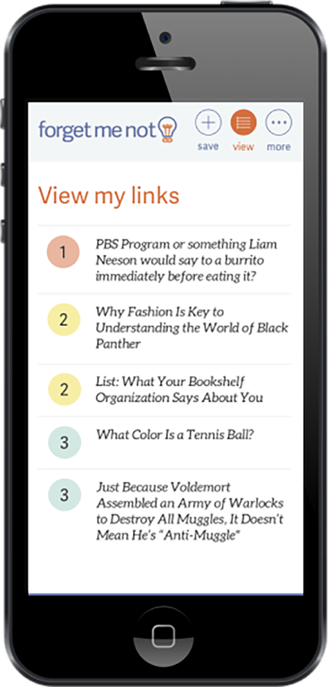

Problem
There are many tools for link saving, but no single leading platform. Why? Core issue: All are link “graveyards”, like my pocket dashboard below . I don’t know what to read first.

Solution
Forget Me Not makes it easy for users to save and remember what’s in their links. Forget Me Not is a tool optimized for reading and remembering links, not just saving them
